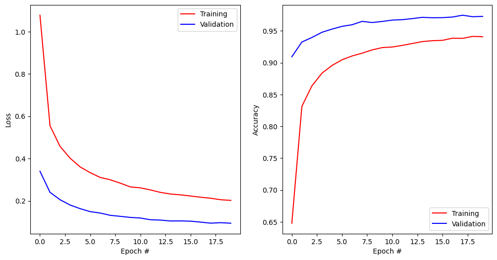

#!pip install ANNarchyANN-to-SNN conversion


This notebook demonstrates how to transform a neural network trained using tensorflow/keras into an SNN network usable in ANNarchy.
The models are adapted from the original models used in:
Diehl et al. (2015) “Fast-classifying, high-accuracy spiking deep networks through weight and threshold balancing” Proceedings of IJCNN. doi: 10.1109/IJCNN.2015.7280696
import numpy as np
import matplotlib.pyplot as plt
import tensorflow as tf
print(f"Tensorflow {tf.__version__}")Tensorflow 2.16.1First we need to download and process the MNIST dataset provided by tensorflow.
# Download data
(X_train, t_train), (X_test, t_test) = tf.keras.datasets.mnist.load_data()
# Normalize inputs
X_train = X_train.reshape(X_train.shape[0], 784).astype('float32') / 255.
X_test = X_test.reshape(X_test.shape[0], 784).astype('float32') / 255.
# One-hot output vectors
T_train = tf.keras.utils.to_categorical(t_train, 10)
T_test = tf.keras.utils.to_categorical(t_test, 10)Training an ANN in tensorflow/keras
The tensorflow networks are build using the functional API.
The fully-connected network has two fully connected layers with ReLU, no bias, dropout at 0.5, and a softmax output layer with 10 neurons. We use the standard SGD optimizer and the categorical crossentropy loss for classification.
def create_mlp():
# Model
inputs = tf.keras.layers.Input(shape=(784,))
x= tf.keras.layers.Dense(128, use_bias=False, activation='relu')(inputs)
x = tf.keras.layers.Dropout(0.5)(x)
x= tf.keras.layers.Dense(128, use_bias=False, activation='relu')(x)
x = tf.keras.layers.Dropout(0.5)(x)
x=tf.keras.layers.Dense(10, use_bias=False, activation='softmax')(x)
model= tf.keras.Model(inputs, x)
# Optimizer
optimizer = tf.keras.optimizers.SGD(learning_rate=0.05)
# Loss function
model.compile(
loss='categorical_crossentropy', # loss function
optimizer=optimizer, # learning rule
metrics=['accuracy'] # show accuracy
)
print(model.summary())
return modelWe can now train the network and save the weights in the HDF5 format.
# Create model
model = create_mlp()
# Train model
history = model.fit(
X_train, T_train, # training data
batch_size=128, # batch size
epochs=20, # Maximum number of epochs
validation_split=0.1, # Percentage of training data used for validation
)
model.save("runs/mlp.h5")
model.save("runs/mlp.keras")
# Test model
predictions_keras = model.predict(X_test, verbose=0)
test_loss, test_accuracy = model.evaluate(X_test, T_test, verbose=0)
print(f"Test accuracy: {test_accuracy}")Model: "functional_1"
┏━━━━━━━━━━━━━━━━━━━━━━━━━━━━━━━━━┳━━━━━━━━━━━━━━━━━━━━━━━━┳━━━━━━━━━━━━━━━┓ ┃ Layer (type) ┃ Output Shape ┃ Param # ┃ ┡━━━━━━━━━━━━━━━━━━━━━━━━━━━━━━━━━╇━━━━━━━━━━━━━━━━━━━━━━━━╇━━━━━━━━━━━━━━━┩ │ input_layer (InputLayer) │ (None, 784) │ 0 │ ├─────────────────────────────────┼────────────────────────┼───────────────┤ │ dense (Dense) │ (None, 128) │ 100,352 │ ├─────────────────────────────────┼────────────────────────┼───────────────┤ │ dropout (Dropout) │ (None, 128) │ 0 │ ├─────────────────────────────────┼────────────────────────┼───────────────┤ │ dense_1 (Dense) │ (None, 128) │ 16,384 │ ├─────────────────────────────────┼────────────────────────┼───────────────┤ │ dropout_1 (Dropout) │ (None, 128) │ 0 │ ├─────────────────────────────────┼────────────────────────┼───────────────┤ │ dense_2 (Dense) │ (None, 10) │ 1,280 │ └─────────────────────────────────┴────────────────────────┴───────────────┘
Total params: 118,016 (461.00 KB)
Trainable params: 118,016 (461.00 KB)
Non-trainable params: 0 (0.00 B)
None
Epoch 1/20
422/422 ━━━━━━━━━━━━━━━━━━━━ 1s 1ms/step - accuracy: 0.4446 - loss: 1.5870 - val_accuracy: 0.9097 - val_loss: 0.3542
Epoch 2/20
422/422 ━━━━━━━━━━━━━━━━━━━━ 1s 1ms/step - accuracy: 0.8117 - loss: 0.6094 - val_accuracy: 0.9318 - val_loss: 0.2393
Epoch 3/20
422/422 ━━━━━━━━━━━━━━━━━━━━ 1s 1ms/step - accuracy: 0.8576 - loss: 0.4769 - val_accuracy: 0.9413 - val_loss: 0.2007
Epoch 4/20
422/422 ━━━━━━━━━━━━━━━━━━━━ 1s 1ms/step - accuracy: 0.8783 - loss: 0.4121 - val_accuracy: 0.9487 - val_loss: 0.1776
Epoch 5/20
422/422 ━━━━━━━━━━━━━━━━━━━━ 1s 1ms/step - accuracy: 0.8891 - loss: 0.3789 - val_accuracy: 0.9550 - val_loss: 0.1568
Epoch 6/20
422/422 ━━━━━━━━━━━━━━━━━━━━ 1s 1ms/step - accuracy: 0.8991 - loss: 0.3450 - val_accuracy: 0.9598 - val_loss: 0.1478
Epoch 7/20
422/422 ━━━━━━━━━━━━━━━━━━━━ 1s 1ms/step - accuracy: 0.9090 - loss: 0.3174 - val_accuracy: 0.9620 - val_loss: 0.1364
Epoch 8/20
422/422 ━━━━━━━━━━━━━━━━━━━━ 1s 1ms/step - accuracy: 0.9101 - loss: 0.3075 - val_accuracy: 0.9647 - val_loss: 0.1295
Epoch 9/20
422/422 ━━━━━━━━━━━━━━━━━━━━ 1s 1ms/step - accuracy: 0.9163 - loss: 0.2880 - val_accuracy: 0.9663 - val_loss: 0.1226
Epoch 10/20
422/422 ━━━━━━━━━━━━━━━━━━━━ 1s 1ms/step - accuracy: 0.9222 - loss: 0.2746 - val_accuracy: 0.9677 - val_loss: 0.1168
Epoch 11/20
422/422 ━━━━━━━━━━━━━━━━━━━━ 1s 1ms/step - accuracy: 0.9264 - loss: 0.2599 - val_accuracy: 0.9682 - val_loss: 0.1146
Epoch 12/20
422/422 ━━━━━━━━━━━━━━━━━━━━ 1s 1ms/step - accuracy: 0.9257 - loss: 0.2593 - val_accuracy: 0.9717 - val_loss: 0.1098
Epoch 13/20
422/422 ━━━━━━━━━━━━━━━━━━━━ 1s 1ms/step - accuracy: 0.9285 - loss: 0.2480 - val_accuracy: 0.9708 - val_loss: 0.1062
Epoch 14/20
422/422 ━━━━━━━━━━━━━━━━━━━━ 1s 1ms/step - accuracy: 0.9291 - loss: 0.2432 - val_accuracy: 0.9722 - val_loss: 0.1008
Epoch 15/20
422/422 ━━━━━━━━━━━━━━━━━━━━ 1s 1ms/step - accuracy: 0.9339 - loss: 0.2290 - val_accuracy: 0.9715 - val_loss: 0.1006
Epoch 16/20
422/422 ━━━━━━━━━━━━━━━━━━━━ 1s 1ms/step - accuracy: 0.9347 - loss: 0.2282 - val_accuracy: 0.9727 - val_loss: 0.0959
Epoch 17/20
422/422 ━━━━━━━━━━━━━━━━━━━━ 1s 1ms/step - accuracy: 0.9381 - loss: 0.2159 - val_accuracy: 0.9723 - val_loss: 0.0951
Epoch 18/20
422/422 ━━━━━━━━━━━━━━━━━━━━ 1s 1ms/step - accuracy: 0.9357 - loss: 0.2198 - val_accuracy: 0.9738 - val_loss: 0.0941
Epoch 19/20
422/422 ━━━━━━━━━━━━━━━━━━━━ 1s 1ms/step - accuracy: 0.9413 - loss: 0.2051 - val_accuracy: 0.9728 - val_loss: 0.0938
Epoch 20/20
422/422 ━━━━━━━━━━━━━━━━━━━━ 1s 1ms/step - accuracy: 0.9428 - loss: 0.2012 - val_accuracy: 0.9712 - val_loss: 0.0938
Test accuracy: 0.9652000069618225WARNING:absl:You are saving your model as an HDF5 file via `model.save()` or `keras.saving.save_model(model)`. This file format is considered legacy. We recommend using instead the native Keras format, e.g. `model.save('my_model.keras')` or `keras.saving.save_model(model, 'my_model.keras')`. plt.figure(figsize=(12, 6))
plt.subplot(121)
plt.plot(history.history['loss'], '-r', label="Training")
plt.plot(history.history['val_loss'], '-b', label="Validation")
plt.xlabel('Epoch #')
plt.ylabel('Loss')
plt.legend()
plt.subplot(122)
plt.plot(history.history['accuracy'], '-r', label="Training")
plt.plot(history.history['val_accuracy'], '-b', label="Validation")
plt.xlabel('Epoch #')
plt.ylabel('Accuracy')
plt.legend()
plt.show()
Initialize the ANN-to-SNN converter
We first create an instance of the ANN-to-SNN conversion object. The function receives the input_encoding parameter, which is the type of input encoding we want to use.
By default, there are intrinsically bursting (IB), phase shift oscillation (PSO) and Poisson (poisson) available.
from ANNarchy.extensions.ann_to_snn_conversion import ANNtoSNNConverter
snn_converter = ANNtoSNNConverter(
input_encoding='IB',
hidden_neuron='IaF',
read_out='spike_count',
)ANNarchy 4.8 (4.8.0) on darwin (posix).After that, we provide the TensorFlow model stored as h5py file to the conversion tool. The print-out of the network structure of the imported network is suppressed when show_info=False is provided to init_from_keras_model.
net = snn_converter.init_from_keras_model("runs/mlp.h5")KeyError: 'batch_input_shape'When the network has been built successfully, we can perform a test using all MNIST training samples. Using duration_per_sample, the number of steps simulated for each image can be specified.
predictions_snn = snn_converter.predict(X_test, duration_per_sample=100)9900/10000Depending on the selected read-out method, it can happen that multiple neurons/classes are selected as a winner for an example. For example, if duration_per_sample is too low, several output neurons might output the same number of spikes.
In the following cell, we force the predictions to keep only one of the winning neurons by using np.random.choice.
predictions_snn = [ [np.random.choice(p)] for p in predictions_snn ]Using the recorded predictions, we can now compute the accuracy using scikit-learn for all presented samples.
from sklearn.metrics import classification_report, accuracy_score
print(classification_report(t_test, predictions_snn))
print("Test accuracy of the SNN:", accuracy_score(t_test, predictions_snn)) precision recall f1-score support
0 0.96 0.99 0.97 980
1 0.99 0.99 0.99 1135
2 0.96 0.96 0.96 1032
3 0.91 0.97 0.94 1010
4 0.96 0.94 0.95 982
5 0.96 0.93 0.95 892
6 0.95 0.97 0.96 958
7 0.98 0.95 0.96 1028
8 0.97 0.92 0.94 974
9 0.93 0.95 0.94 1009
accuracy 0.96 10000
macro avg 0.96 0.96 0.96 10000
weighted avg 0.96 0.96 0.96 10000
Test accuracy of the SNN: 0.9568For comparison, here is the performance of the original SNN:
print(classification_report(t_test, predictions_keras.argmax(axis=1)))
print("Test accuracy of the ANN:", accuracy_score(t_test, predictions_keras.argmax(axis=1))) precision recall f1-score support
0 0.97 0.99 0.98 980
1 0.98 0.99 0.98 1135
2 0.96 0.97 0.97 1032
3 0.94 0.98 0.96 1010
4 0.97 0.97 0.97 982
5 0.97 0.96 0.97 892
6 0.97 0.97 0.97 958
7 0.98 0.96 0.97 1028
8 0.98 0.95 0.96 974
9 0.97 0.96 0.96 1009
accuracy 0.97 10000
macro avg 0.97 0.97 0.97 10000
weighted avg 0.97 0.97 0.97 10000
Test accuracy of the ANN: 0.9696A comparison of the predictions made by the ANN and the SNN on each class may reveal different behavior:
print(classification_report(predictions_keras.argmax(axis=1), predictions_snn)) precision recall f1-score support
0 0.99 0.99 0.99 1001
1 1.00 0.99 0.99 1142
2 0.98 0.97 0.97 1037
3 0.95 0.98 0.96 1049
4 0.97 0.96 0.97 983
5 0.97 0.96 0.97 879
6 0.97 0.98 0.97 957
7 0.99 0.97 0.98 1007
8 0.98 0.95 0.97 948
9 0.95 0.98 0.96 997
accuracy 0.97 10000
macro avg 0.97 0.97 0.97 10000
weighted avg 0.97 0.97 0.97 10000